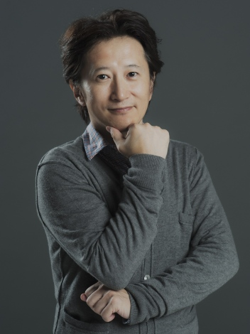

Дата рождения: 7 июня 1960
Возраст: 61 год
Знак зодиака: Близнецы
Пол: Мужской
Национальность: Японец

Тосиюки Араки
Информация
Описание
Тосиюки Араки (яп. 荒木 利之, род. 7 июня 1960 года, Сендай, Мияги), более известен под псевдонимом Хирохико Араки (яп. 荒木 飛呂彦) — японский мангака, наиболее известен благодаря своей работе над мангой JoJo’s Bizarre Adventure в 8 частях, которая публикуется в журнале Weekly Shōnen Jump уже более 30 лет.
Только в Японии было продано свыше 80 миллионов копий манги (по состоянию на 2007 год).
В 2019 году Хирохико Араки получил премию Министерства культуры Японии за достижения в искусстве.
Только в Японии было продано свыше 80 миллионов копий манги (по состоянию на 2007 год).
В 2019 году Хирохико Араки получил премию Министерства культуры Японии за достижения в искусстве.